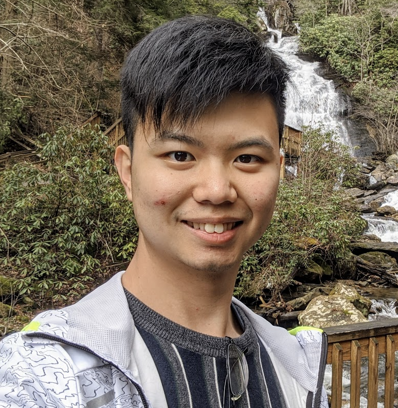

Building a world that brings us closer
to each other, and to ourselves.
Frontend / Full Stack Software Engineer | User Experience Engineer
 Though old saying "Technology Humanity", do the technologies nowadays bring more humanity to us? AI and ML allow computers to reach further, but how could we really use these breakthroughs to enrich people? I place myself in the gap between technology and humanity, my mission is to augment human with the technology, as well as with the deep concern of humanity.
Portfolio
AR Pedestrian Navigation
Project Background : Research Project
Project date : 2018.09 - present
Project supervisor : Dr. Yung-Ju Chang and Dr. Hung-Kuo Chu
In the observation of the most widely used digital mapping navigation system -- Google map, we found users...

Who Matters
Project Background : Research Project
Project date : 2017.12 - present
Project supervisor : Dr. "Stanley" Yung-Ju Chang
Submitted to CHI’19
Understanding the Impact of Relationship Characteristics on Receptivity to Mobile IM Messages.
Charles Bot
Project Background : Side Project
Project date : 2018.4 - 2018.6
A Hands-Free, Eyes-Free Voice User Interface on Android devices
People frequently use mobile phone and constantly need to stay in touch with others. With the existing method...
User Experience and Usability Evaluation for Hope English
Project Background : Course Project
Project date : 2018.2 - 2018.6
Project supervisor : Hope English's CFO, Jasper Chang & Dr. "Stanley" Yung-Ju Chang
Insight-gram
Project Background : Course Project
Project date : 2018.06
We crawled and extracted keywords from posts with location tags on Instagram since trends on Instagram satisfies the endemic and transient characteristics. We then cluster posts with similar keywords together...
Knowledge Explorer
Project Background : Course Project
Project date : 2017 Fall
Project supervisor : Dr. Hao-Chuan Wang
A Collaborative Concept Mapping System for Improving Online How-To Knowledge Transfer
Imagine a scenario that you are searching for a tutorial...
Météore
Project Background : Course Project
Project semester : 2016 Fall
Community makes a small action BIG.
We design a social platform that everyone owns a planet in the galaxy. Users generated their individual or public goals and share them to the community...
Experience
M.S. Computer Science, Georgia Institute of Technology
August 2019 - Present
Atlanta, Georgia
- Cources: Big Data and Visual Analytics | Mobile Apps and Services | Principle UI Software | Ubiquitous Computing | Mobile Computing & IoT | Big Data Systems
KKday MarTech - Growth Hacker intern
April 2019 - July 2019
Taipei, Taiwan
- Performed User Journey Analysis, Email Automation and Customization, and Conversion Rate Optimization
- Project Leader of Southeast Asia Markets App Promotion Campaign.
- Led colleagues from IT, Marketing, and Content team in Thailand, Viet Nam, Singapore, and Taiwan to perform the campaign on schedule.
- Reached 60% boost of organic app downloads in the Southeast Asia Markets.
Research Assisstant at National Chiao Tung University (NCTU)
February 2018 - Present
Hsinchu, Taiwan
- Researching mobile related human-computer interaction topics especially using the technique of ubiquitous computing
- Conducting research focusing on mobile computer-mediated communication (CMC), and mobile augmented reality(AR) pedestrian navigation here
Summer Academy at Linköping University
Summer 2017
Linköping, Sweden
Summer academy with course credits—Studied Innovation and Entrepreneurship in a Swedish Context.
App UX Tester and QA engineer Summer Intern at D2 Technologies
Summer 2016 as App UX Tester and front end developer
Summer 2017 as QA engineer
Hsinchu, Taiwan
- Front end designer & mobile application UX tester
- Drew the layout of official website, please visit:https://www.d2tech.com/
B.S. Computer Science, National Tsing Hua University (NTHU)
Fall 2014 - Spring 2018
Hsinchu, Taiwan
Relevant Courses:
Data Structures (A), Data Science (A+), Machine Learning (A+), Introduction to Massive Data Analysis (A), Social Computing Application Design (A), User Experience and Usability Evaluation (A+), Applied Quantitative Methods for Human-Computer Interaction (A+)